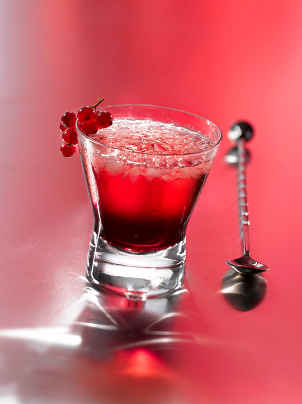

Cuisinez avec Campbells - De délicieuses recettes faciles à faire
Aller à contenu principal EN ENGLISH ENGLISH
Search Recipes
Facebook (ouvre une nouvelle fenêtre) Twitter (ouvre une nouvelle fenêtre) YouTube (ouvre une nouvelle fenêtre) Pinterest (ouvre une nouvelle fenêtre) Instagram (ouvre une nouvelle fenêtre) RECETTES APPRENDRE RECHERCHERCuisinez avec Campbells - De délicieuses recettes faciles à faire
RECETTES APPRENDRE RECHERCHER Recherche Bouillon Concentré
Recettes
Cliquez Ici Recette vedette
RECETTE SAUVERLinguines au poulet et au brocoli faciles en un plat
TEMPS DE PRÉP :5 MIN TEMPS DE CUISSON :
18 MIN PORTION :
4
Gamme vedette
GAMMEBouillon Concentré Recettes
Trouvez votre idéal de saveur avec le bouillon concentré Campbell’s! Nos bouillons concentrés sont jusqu’à quatre fois plus concentrés que nos bouillons prêts à utiliser. Vous pouvez ainsi personnaliser l’intensité de la saveur de vos plats.
VOIR PLUS DE GAMMESNotre dernier recettes
RECETTE SAUVERTacos « tinga » au poulet rapide
TEMPS DE PRÉP :10 MIN TEMPS DE CUISSON :
12 MIN PORTION :
4 RECETTE SAUVER
Poêlée de tacos au bœuf
TEMPS DE PRÉP :5 MIN TEMPS DE CUISSON :
23 MIN PORTION :
4 RECETTE SAUVER
Pâtes aux tacos à l’autocuiseur Instant Pot ®
TEMPS DE PRÉP :5 MIN TEMPS DE CUISSON :
15 MIN PORTION :
4 Voir Vidéos
Dernier Vidéos
View Video Sauté de bœuf à l’orange Voir RecetteSauté de bœuf à l’orange
View Video Poulet au parmesan à la poêle facile Voir RecettePoulet au parmesan à la poêle facile
View Video Tacos à la thaïe Voir RecetteTacos à la thaïe
View Video Chili au poulet suprême Voir RecetteChili au poulet suprême
View Video Riz frit aux crevettes Voir RecetteRiz frit aux crevettes
View Video Poêlée de poulet et riz façon fajitas Voir RecettePoêlée de poulet et riz façon fajitas
Voir VidéosProduit Vedette
Bouillon de poulet concentré Campbell’s
Le bouillon de poulet concentré Campbell’s MD est jusqu’à quatre fois plus concentré (comparativement au format de 900 mL du bouillon de poulet prêt à utiliser Campbell’s MD ). Vous pouvez ainsi relever plus ou moins la saveur de vos plats. Pour plus de saveur, ajoutez simplement moins d’eau!1 boîte de bouillon concentré Campbell’s MD + 3 tasses d’eau = 4 tasses de bouillon
Sans colorant ni arôme artificiels
65 % moins de sodium dans 1 tasse de bouillon reconstitué que dans le bouillon de poulet prêt à utiliser Campbell’s MD
60 % moins d’emballage que le format de 900 mL du bouillon prêt à utiliser Campbell’s MD
Préparé au Canada
AFFICHER TOUTE L’INFORMATION SUR LE PRODUIT (ouvre une nouvelle fenêtre) Acheter Maintenant RECETTE SAUVER
Casserole de gnocchis grillés avec saucisse, champignons et chou frisé
TEMPS DE PRÉP :10 MIN TEMPS DE CUISSON :
20 MIN PORTION :
4 Cacher la vidéo
Follow Us
OBTENEZ LE BULLETIN DES IDÉES-REPAS
Inscrivez-vous au Bulletin des idées repas® pour recevoir des idées de recettes inspirantes directement dans votre boîte de réception
Inscrivez-vousSUIVEZ-NOUS
Ne manquez jamais d’inspiration avec des idées de repas
faciles et délicieuses, où que vous soyez
Choix de pub haut
de page
© 2021 Compagnie Campbell du Canada.
Tous Droits Réservés.
